Support Vector Machines are another supervised learning technique that make use of geometry to classify data points. The idea is that each vector of data can be plotted in n-dimensional space and then hyperplanes can be created through that space such that one side of the line is data points belonging to one class and the other belongs to the other. A singular SVM can only classify data into two categories. To handle a 3+ class problem, multiple SVM's must be created to separate the data.

When using SVM's, margins and cost are two concepts and parameters which must be understood. The margin can be understood as the distance between the two support vectors. The support vectors are two parallel lines that generally pass through the points closest to the other category's points and thus form a boundary between one class and the other. The margin can be hard or soft depending on the cost parameter, the higher the cost the harder the margin. With a soft margin, misclassification errors are allowed but have a cost associated with them which contributes to the error rate. A SVM with 0 cost gives no penalty to points that fall inside the margin. The goal as a whole with the SVM is to maximize the margin because a larger margin indicates a more distinct classification between the two sets of data points.
With SVM's different kernel types can be used to teach models to interpret the data in different ways. The kernels used here are linear, radial, and polynomial. The linear kernel simply means that the support vectors created will be linear as opposed to a curved or a more complex polynomial graph. The radial kernel is used more accurate for non-linear formatted data that can be separated with decision boundaries that are made of normal curves. The polynomial kernel creates nonlinear support vectors to separate the data.
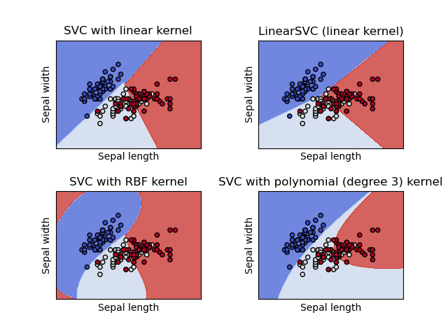SVM's for the text data makes use of the normalized text data used for the other supervised learning methods. Formatting the text data into a usable form for SVM analysis made use of the three clusters that were found in the clustering process as previously discussed. The approach was to pull a balanced subset of the text data (1000 tweets from each label), treat each tweet as its own unique vector, and run the GridSearchCV to tune parameters and then run the sklearn's SVM kernels to try and classify a tweet into its class solely using the words in that tweet (minus the search terms).
An 80/20 train/test split was used and the label counts are balanced as shown below:
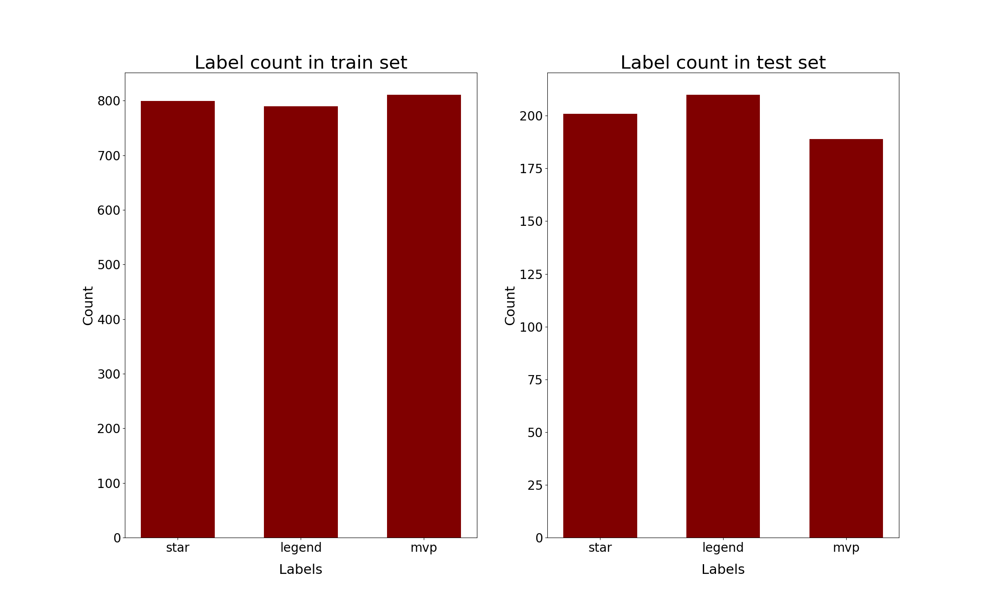Parameter tuning in python makes use of the GridSearchCV function. With this function different parameter values can be tested and the optimal models selected. The code below tests different cost values for the different kernel types:
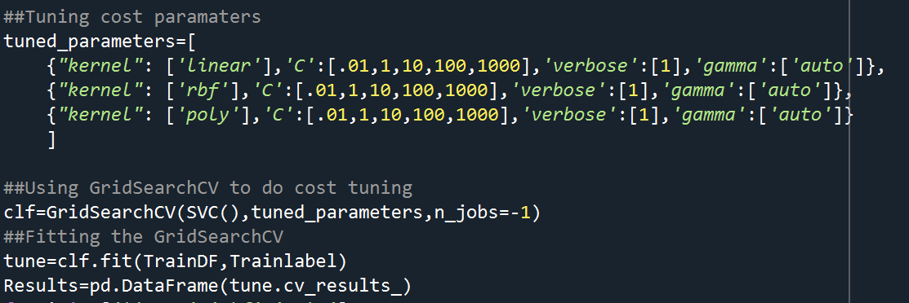This process returns a dataframe of information regarding model accuracies based on the different parameters:
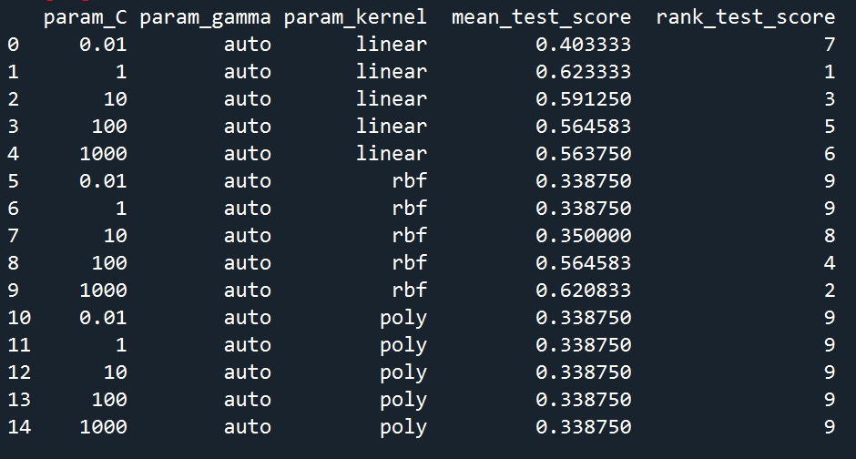Using these results, the optimal cost for the Linear SVM is 1, for the radial SVM it is 1000, and for the polynomial SVM all perform equally poorly so a cost of .01 is used.
Training the SVM on the Train Data and its associated labels and then predicting the test vectors allows for analysis of the accuracy of the model. The linear kernel with a cost of 1 produces a model with 62% accuracy.
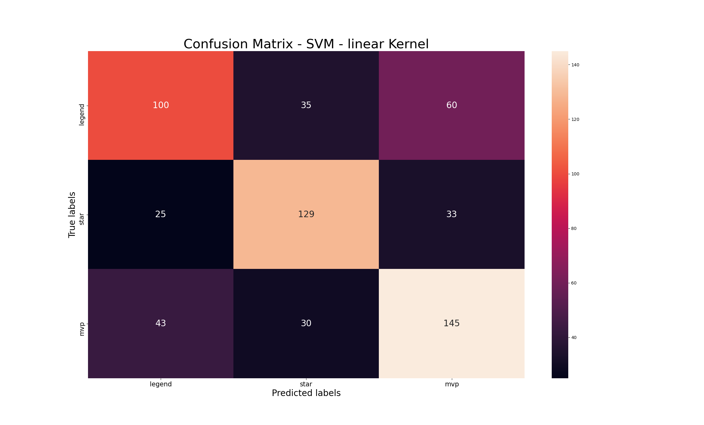
The linear SVM was able to predict all classes with at least a 55% accuracy, with the MVP and star labels being the easiest to predict. The differences in accuracy can be further analyzed by looking at the words that were most predictive of particular labels.
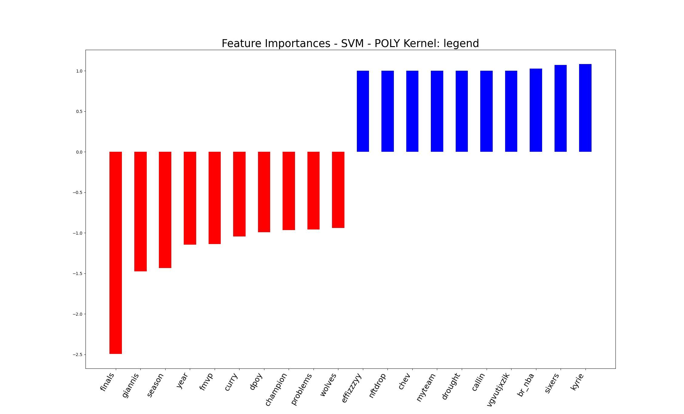The legend label (consisting of legend, allstar, and superstar tweets) did not have any impactful words that helped predict it, rather words that were highly predictive of the mvp label were negatively predictive of being part of the legend label. Such words include "finals", "fmvp", "dpoy", and player names like "giannis". The fact that the legend label has no words of significance that are predictive is likely due to the fact that it is a sampling of 3 different twitter searches, although this result is disappointing. The mvp label had meaningful highly predictive words that indicate the importance of playing well in a given season and winning awards/championships, a repeatedly clear aspect of nba stardom. Lastly, the star label's most predictive features are not particularly meaningful. The mention of "sixers" is an interesting finding and is likely due to the recent controversy related to Ben Simmons and his holdout from the Philadelphia 76ers.
The radial kernel with a cost of 1000 produced a model with accuracy of 65%.
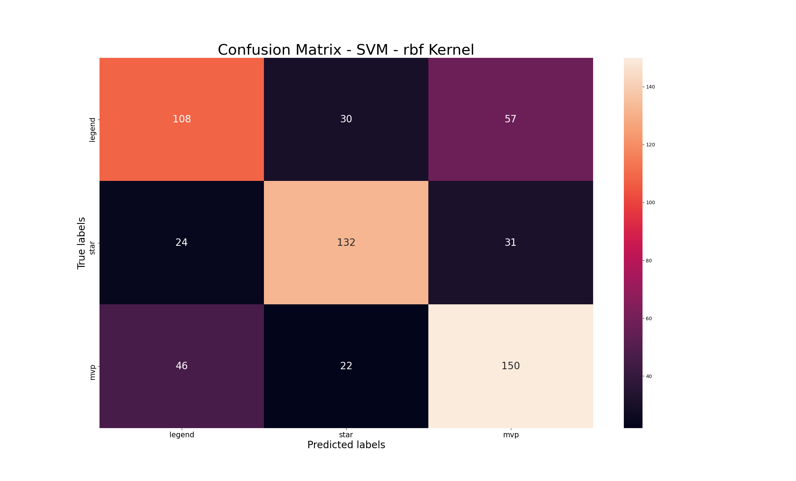 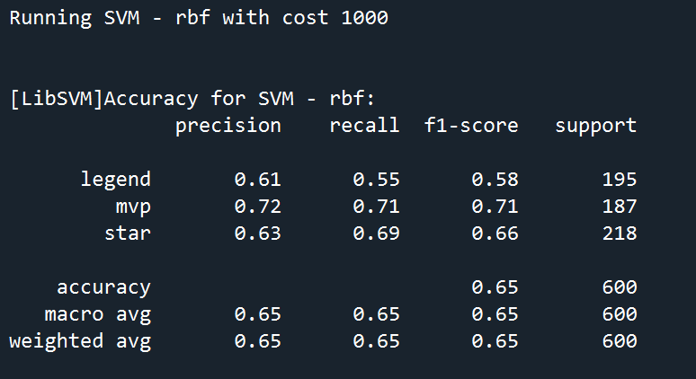The polynomial kernel failed to serve as a predictive model as it failed to predict instances of both the star and legend labels leaving a model with 32% accuracy. All of the accuracy came from identifying all mvp tweets correctly which is meaningless given that that is the only label the model predicted. In practice, this model is totally unusable.
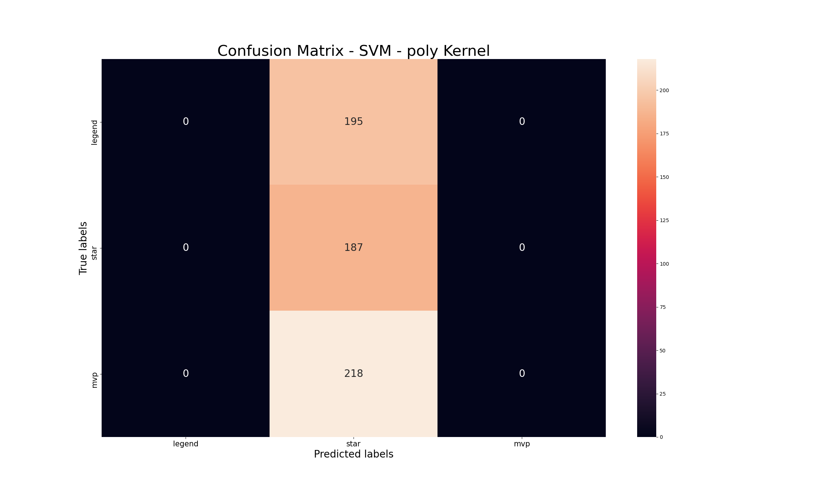 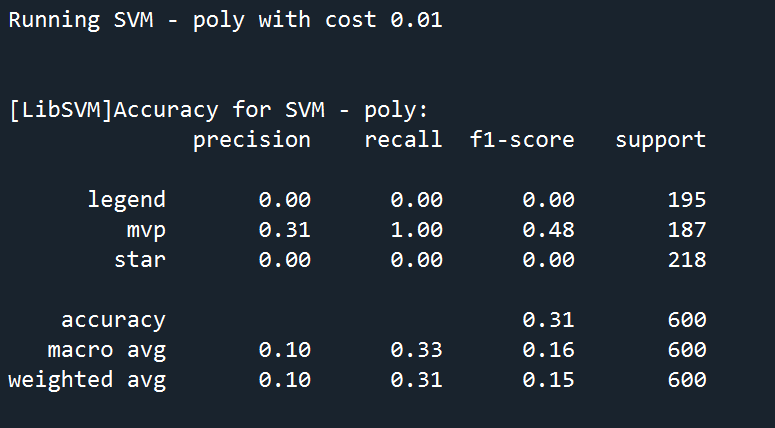The code used for the SVM's for text data analysis and the associated plots are linked here.
SVM's for the record data require numeric and normalized data. The data used is the same data used for all the supervised learning methods and is linked here. The non-numeric columns were removed and the data was normalized using min max normalization using the process below:
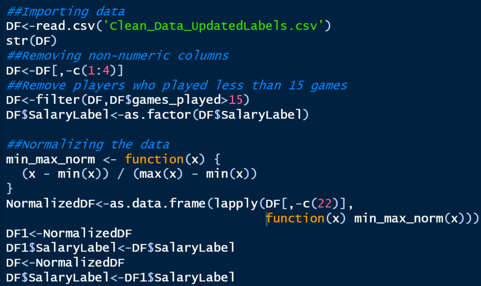Once complete the train and test sets were created with data labels representative of that of the data as a whole.
 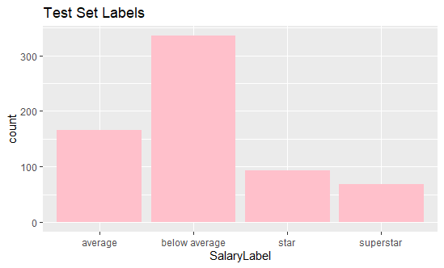
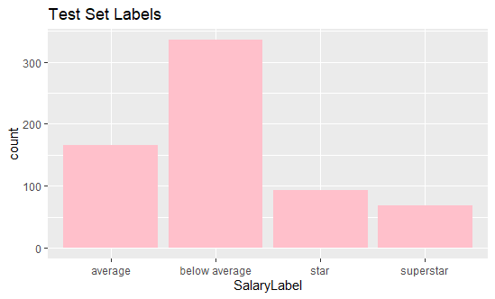

Once the labels and Salary columns are removed the svm model, using the e1071 library in R, can be run. One unique aspect of R is the ability to tune the svm model with different cost parameters to see which performs best using the tune function.
First, tuning was used to see which cost parameters would be optimal. A logarithmic scale was used starting at .01 and ending at 1000. Using the tune function and these parameters it was found that a cost of 100 produced the best model (the lowest error rate):
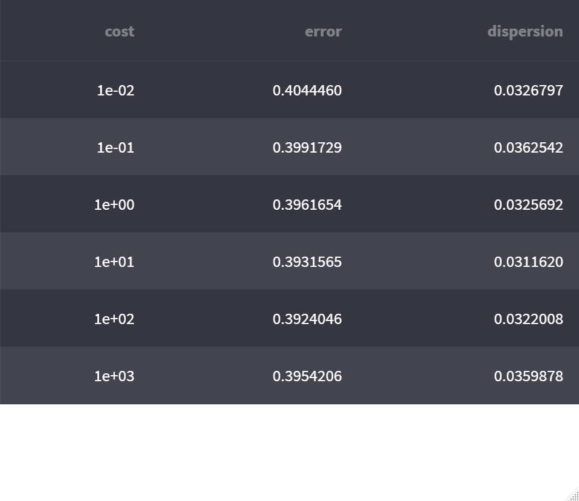With the cost of 100 the Linear SVM produced a model with 63.4% accuracy using 1,857 support vectors.
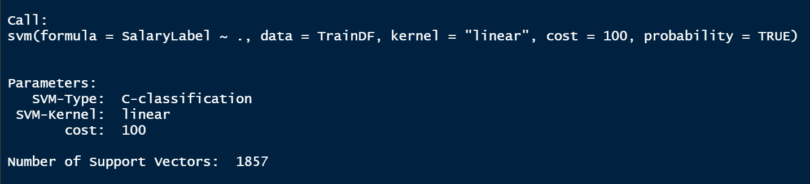 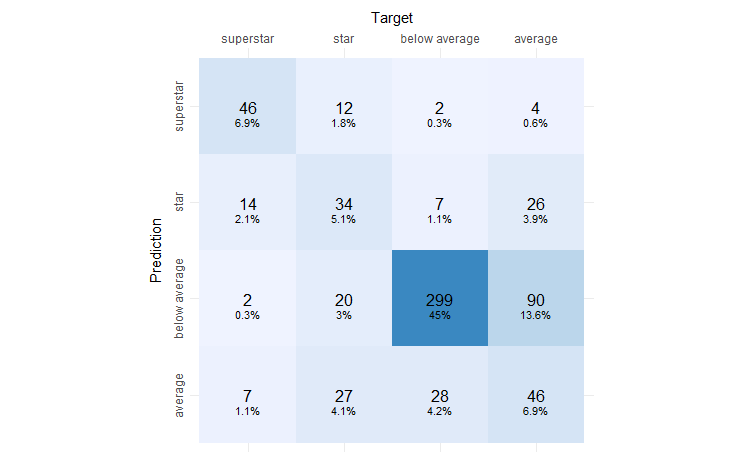 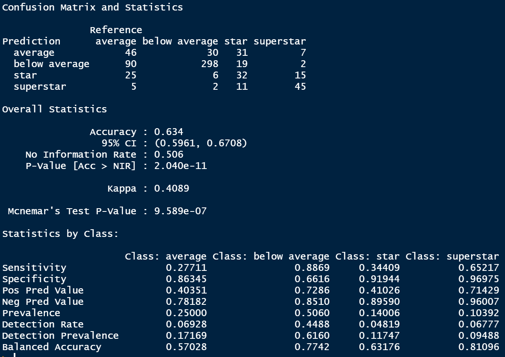Given the difficulty of visualizing multi dimensional space, a 3D viz using the variables true shooting attempts, 2k ratings, and efficiency was used.
This does not represent all the variables in the data, but these 3 are some of the highest correlated variables with Salary so it provides a nice proxy. The visualization is labeled with the predicted classes was used. One thing to note is how organized the predicted classes are, there are relatively clear demarcations between the labels, whereas in the train data these demarcations are not as clear:
Given the variables of choice, the predicted Linear SVM classes are actually more in line with expectations than that of the actual labels which is interesting and begs the question of whether or not Salary decisions follow a truly rational process.
The radial kernel is used more accurate for non-linear formatted data that can be separated with decision boundaries that are made of normal curves. Using the tuning method with different costs, a cost of 10 produced the lowest error.
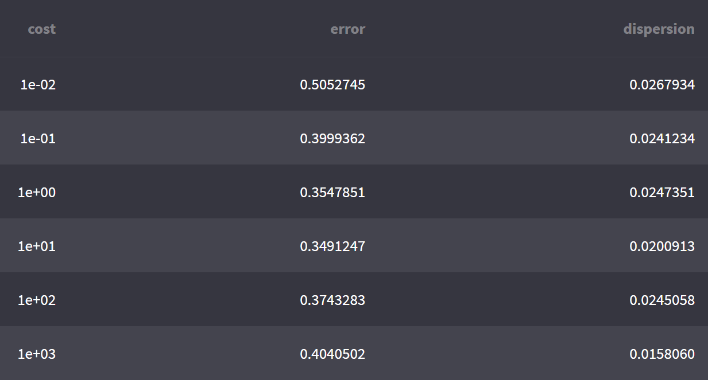With a cost of 10 the Radial SVM produced a model with 67.3% accuracy using 1,850 support vectors. This model had the highest accuracy of the three kernels likely because of the shape of the data. The record data vectors all share non-zero values for the same variables and thus are lumped more together as a contiguous cluster in 20 - dimensional space. As a result, the curved decision boundaries are more useful for making accurate predictions.
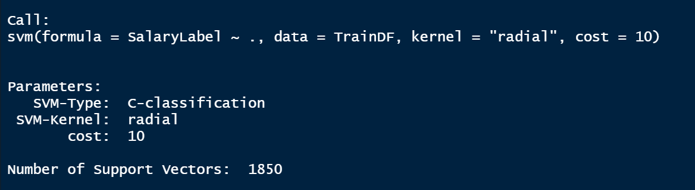 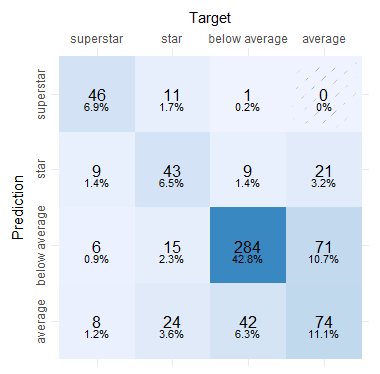 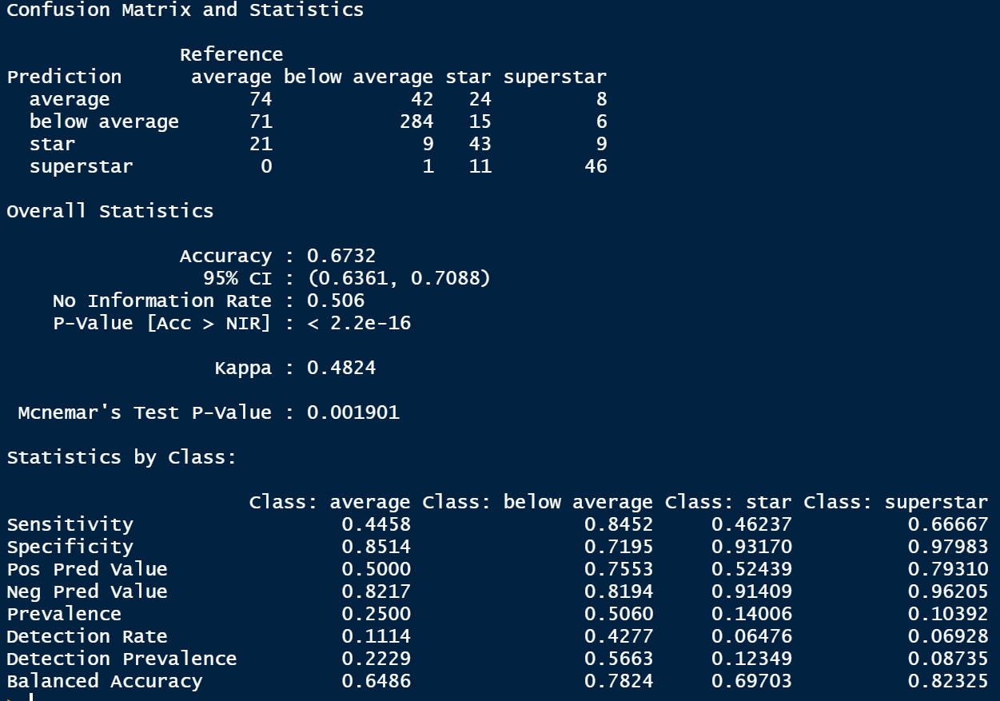To better visualize the radial SVM model a 3D viz labeled with the predicted classes was used. This data is the most in line with the actual labels and follows the general trend of higher salary with higher 2k ratings, efficiency, and true shooting attempts.
The polynomial kernel creates nonlinear support vectors to separate the data. The default degree (and the most accurate in this case) for the polynomial is 3 and that Once again, tuning was used to identify the optimal cost parameter which turned out to be 10, just like the radial kernel.
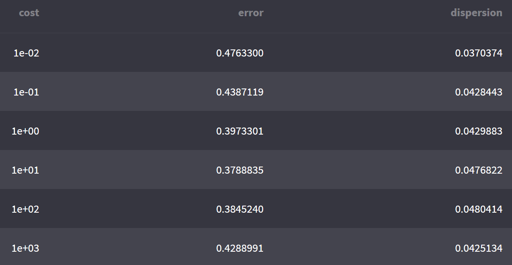With the cost of 10 the Polynomial SVM produced a model with 63.4% accuracy using 1,801 support vectors, the same exact accuracy as the Linear kernel.
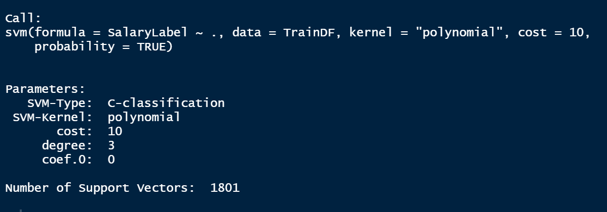 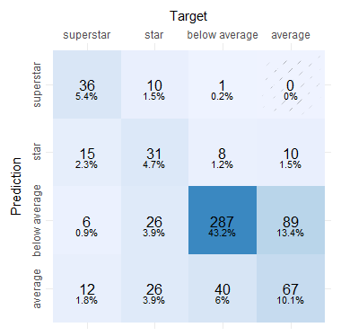 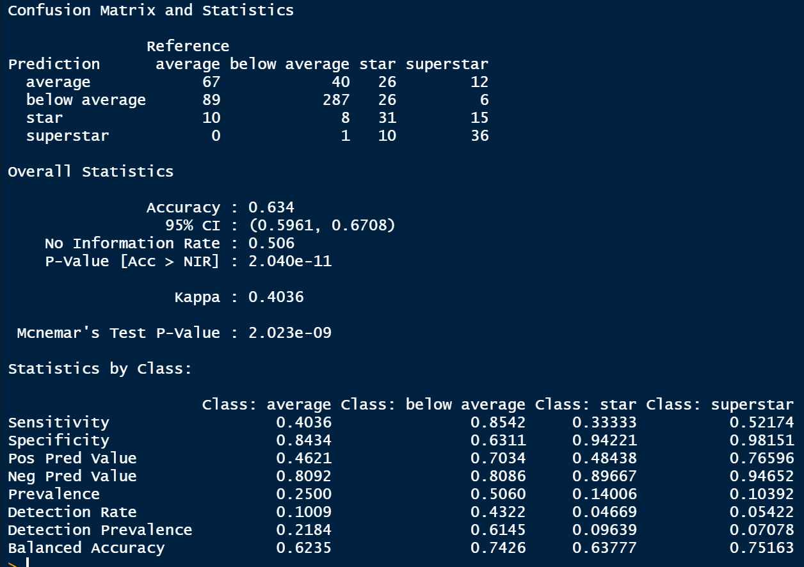The code used for the creation of the SVM's for record data analysis and associated plots for the record data is linked here.
The SVM's for the text data produced similar accuracy results to that of that of the Naive Bayes models in terms of accuracy. The most effective kernel for this data was the radial kernel which produced a model with 65% accuracy. The most identifiable labels for the SVM's were the mvp and star labels. The SVM's were able to identify the fact that talks about the nba mvp award and the relevant candidates are heavily linked to winning other awards like "dpoy" (Defensive Player of the Year) and winning championships. One aspect to note about the radial SVM model was the high accuracy with a high cost parameter of 1000. The higher the cost the harder the margin, and the high accuracy with this relatively hard margin indicates that this is the optimal classification model for this text data.
Regarding the record data, the radial SVM kernel with a cost of 10 produced the best accuracy at 67.3%. For all the variations, the superstar and below average classes were predicted with the highest degrees of accuracy and the overall accuracy is skewed by the relative size of the "below average" bin (2x more data points are assigned to this label than any other individual label). Also of note is the amount of support vectors the models utilized to develop the SVM. All models were in the 1,800 range which is quite a lot and could be a sign of overfitting for this specific data.